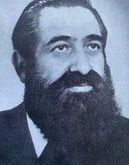

Overview: Rabbi Hillel Medalie (1917–1977) was an Orthodox rabbi who served as the Chief Rabbi of Antwerp, Belgium, and as the rabbi of the Shomrei Hadass community in Antwerp from 1965 until his death in 1977. Before his appointment in Antwerp, he served as Chief Rabbi of Dublin, Ireland, and Chief Rabbi of Leeds, England.
Early Life
Hillel Medalie was born in Vitebsk, Russia, in 1917. He was the son of Rabbi Shmaryahu Yehuda Leib Medalia (1872–1936), who served as Chief Rabbi of Moscow during the Soviet period. His father was one of the leading rabbis of Soviet Jewry and was arrested and executed by the Soviet authorities in 1936.
Growing up in a rabbinic family, Hillel Medalie received a traditional Jewish education and was ordained as a rabbi at the age of 20.
Studies and Early Activities
After receiving rabbinic ordination, Rabbi Medalie continued his academic studies and later received a Master of Arts degree from the University of Manchester.
Before the Second World War, he was active in Jewish communal affairs in Mandatory Palestine. He served as a cultural leader of the Young Israel Organization and Synagogue, an Orthodox Jewish organization in Palestine.
Rabbinic Career in Ireland
In 1940, Rabbi Medalie was appointed Chief Rabbi of Dublin, Ireland.
His appointment took place during the Second World War, when Jewish communities across Europe were experiencing major upheaval. During his time in Dublin, he served as the religious leader of the city's Orthodox Jewish community.
Chief Rabbi of Leeds
In 1947, Rabbi Medalie became Chief Rabbi of Leeds, England, a position he held until 1964.
Leeds had a significant Jewish community, including Orthodox institutions, synagogues, and educational organizations. During his seventeen years there, he served as the senior rabbinic authority of the community.
Chief Rabbi of Antwerp
In 1965, Rabbi Hillel Medalie was appointed rabbi of the Shomrei Hadass congregation in Antwerp, Belgium, succeeding Rabbi Moshe Avraham Halperin.
At the time, Antwerp was one of the largest centers of Orthodox Jewish life in Western Europe. The Jewish community had been rebuilt after the Holocaust, with a large Orthodox population including Holocaust survivors and their descendants.
As Chief Rabbi of Shomrei Hadass, Rabbi Medalie served as the religious authority of one of Antwerp's main Orthodox communities. His responsibilities included rabbinic supervision, communal leadership, and matters of Jewish law.
Family
Rabbi Hillel Medalie was a member of a prominent rabbinic family. His father, Rabbi Shmaryahu Yehuda Leib Medalia, was Chief Rabbi of Moscow before being executed by the Soviet government.
His descendants include members of the Medalia family involved in Jewish communal and rabbinic life.
Death
Rabbi Hillel Medalie died on 22 September 1977 at the age of 60.
According to reports, he died shortly after conducting the Yom Kippur services in Antwerp. He had been suffering from illness before his death.
After his death, the Shomrei Hadass community appointed Rabbi Dovid Moshe Lieberman as its new rabbi. Rabbi Lieberman later served as the community's rabbinic leader for more than four decades.
Legacy
Rabbi Hillel Medalie was one of the important Orthodox rabbinic figures in postwar Europe. His rabbinic career included leadership positions in Ireland, England, and Belgium.
His period as Chief Rabbi of Antwerp coincided with the continued development of the city's Orthodox Jewish institutions after the Holocaust. He was succeeded by Rabbi Dovid Moshe Lieberman, who continued the leadership of the Shomrei Hadass community.
Profile Archive
